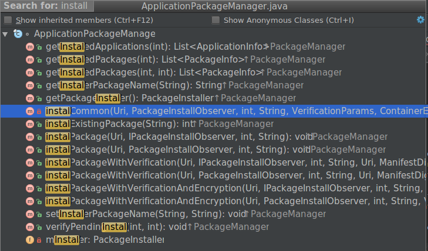

概述
Android中应用的安装方式有多种：
- 系统应用安装，这种方式在第一次开机时完成。这部分在上一篇博客中已经讲到。
- 通过系统安装器安装，这种方式有UI界面交互。
- 通过
adb install命令安装。 - 通过应用市场安装。 虽然有这么多的安装方式，但在PMS内部，后面三种的流程却是大同小异的。
我们先来看一下ApplicationPackageManager给我们开发的安装应用的接口：

除了ApplicationPackageManager.installExistingPackage()之外，其他的几个方法都会通过mPM.installPackage()通过跨进程调用到PMS的installPackage()方法，因此，Android应用安装部分的介绍我们就从这个方法来说起。
Android的应用安装有下面几个阶段的工作：
- 复制文件阶段
- 将文件复制到/data/app/目录
- 解析应用阶段
- 解析apk信息
- dexopt操作
- 更新权限信息
- 完成安装,发送
Intent.ACTION_PACKAGE_ADDED广播
代码调用流程如下：
├── PMS.installPackage()
└── PMS.installPackageAsUser()
|传递 InstallParams 参数
PackageHandler.doHandleMessage().INIT_COPY
|
PackageHandler.doHandleMessage().MCS_BOUND
├── HandlerParams.startCopy()
│ ├── InstallParams.handleStartCopy()
│ │ └──InstallArgs.copyApk()
│ └── InstallParams.handleReturnCode()
│ └── PMS.processPendingInstall()
│ ├── InstallArgs.doPreInstall()
│ ├── PMS.installPackageLI()
│ │ ├── PackageParser.parsePackage()
│ │ ├── PackageParser.collectCertificates()
│ │ ├── PackageParser.collectManifestDigest()
│ │ ├── PackageDexOptimizer.performDexOpt()
│ │ ├── InstallArgs.doRename()
│ │ │ └── InstallArgs.getNextCodePath()
│ │ ├── replacePackageLI()
│ │ │ ├── shouldCheckUpgradeKeySetLP()
│ │ │ ├── compareSignatures()
│ │ │ ├── replaceSystemPackageLI()
│ │ │ │ ├── killApplication()
│ │ │ │ ├── removePackageLI()
│ │ │ │ ├── Settings.disableSystemPackageLPw()
│ │ │ │ ├── createInstallArgsForExisting()
│ │ │ │ ├── deleteCodeCacheDirsLI()
│ │ │ │ ├── scanPackageLI()
│ │ │ │ └── updateSettingsLI()
│ │ │ └── replaceNonSystemPackageLI()
│ │ │ ├── deletePackageLI()
│ │ │ ├── deleteCodeCacheDirsLI()
│ │ │ ├── scanPackageLI()
│ │ │ └── updateSettingsLI()
│ │ └── installNewPackageLI()
│ │ ├── scanPackageLI()
│ │ └── updateSettingsLI()
│ ├── InstallArgs.doPostInstall()
│ ├── BackupManager.restoreAtInstall()
│ └── sendMessage(POST_INSTALL)
│ |
│ PackageHandler.doHandleMessage().POST_INSTALL
│ ├── grantRequestedRuntimePermissions()
│ ├── sendPackageBroadcast()
│ └── IPackageInstallObserver.onPackageInstalled()
└── PackageHandler.doHandleMessage().MCS_UNBIND
└── PackageHandler.disconnectService()
adb install
安装 APK 命令可以用adb install [-lrtsd] <file>或者adb install-multiple [-lrtsdp] <file...>，adb install-multiple表示批量安装。
参数介绍：
- -l：锁定该程序
- -r：可以覆盖已有的应用，保留数据和缓存文件
- -t：允许测试该应用
- -s：安装在SD卡中
- -d：允许降低版本安装
- -p：部分应用程序安装
安装
复制文件阶段
这个阶段的主要工作就是把要安装的应用复制到/data/app目录下，这里主要针对安装第三方应用以及升级系统应用而言，系统应用的安装在初始化部分完成的，前面博客已经做过介绍。
下面开始分析复制文件过程的源码，首先是从PMS.installPackageAsUser()开始。
@Override
public void installPackageAsUser(String originPath, IPackageInstallObserver2 observer,
int installFlags, String installerPackageName, VerificationParams verificationParams,
String packageAbiOverride, int userId) {
// 检查调用者或者自己有没有安装应用的权限
mContext.enforceCallingOrSelfPermission(android.Manifest.permission.INSTALL_PACKAGES, null);
final int callingUid = Binder.getCallingUid();
enforceCrossUserPermission(callingUid, userId, true, true, "installPackageAsUser");
if (isUserRestricted(userId, UserManager.DISALLOW_INSTALL_APPS)) {
try {
if (observer != null) {
observer.onPackageInstalled("", INSTALL_FAILED_USER_RESTRICTED, null, null);
}
} catch (RemoteException re) {
}
return;
}
if ((callingUid == Process.SHELL_UID) || (callingUid == Process.ROOT_UID)) {
installFlags |= PackageManager.INSTALL_FROM_ADB;
} else {
// Caller holds INSTALL_PACKAGES permission, so we're less strict
// about installerPackageName.
installFlags &= ~PackageManager.INSTALL_FROM_ADB;
installFlags &= ~PackageManager.INSTALL_ALL_USERS;
}
UserHandle user;
if ((installFlags & PackageManager.INSTALL_ALL_USERS) != 0) {
// 可以操作所有用户，意思是可以给所有用户安装应用
user = UserHandle.ALL;
} else {
// 只允许给userId安装
user = new UserHandle(userId);
}
// Only system components can circumvent runtime permissions when installing.
if ((installFlags & PackageManager.INSTALL_GRANT_RUNTIME_PERMISSIONS) != 0
&& mContext.checkCallingOrSelfPermission(Manifest.permission
.INSTALL_GRANT_RUNTIME_PERMISSIONS) == PackageManager.PERMISSION_DENIED) {
throw new SecurityException("You need the "
+ "android.permission.INSTALL_GRANT_RUNTIME_PERMISSIONS permission "
+ "to use the PackageManager.INSTALL_GRANT_RUNTIME_PERMISSIONS flag");
}
verificationParams.setInstallerUid(callingUid);
final File originFile = new File(originPath);
final OriginInfo origin = OriginInfo.fromUntrustedFile(originFile);
final Message msg = mHandler.obtainMessage(INIT_COPY);
msg.obj = new InstallParams(origin, null, observer, installFlags, installerPackageName,
null, verificationParams, user, packageAbiOverride, null);
mHandler.sendMessage(msg);
}
installPackageAsUser()主要工作就是进行一系列权限的验证，然后发送 INIT_COPY 消息。
发送消息时会传递一个InstallParams参数，InstallParams是继承自HandlerParams抽象类的，用来记录安装应用的参数。
下面再来看一下对INIT_COPY消息的处理，该消息的处理在PackageHandler.doHandleMessage()中进行的。
case INIT_COPY: {
HandlerParams params = (HandlerParams) msg.obj;
int idx = mPendingInstalls.size();
if (!mBound) {
// 如果还没有进行绑定工作，要先绑定到DefaultContainerService
if (!connectToService()) {
params.serviceError();
return;
} else {
// 添加到等待列表中去，在`onServiceConnected()`发送`MCS_BOUND`消息
mPendingInstalls.add(idx, params);
}
} else {
// 添加到等待列表中去
mPendingInstalls.add(idx, params);
// 如果列表中没有其他等待的消息，发送MCS_BOUND
if (idx == 0) {
mHandler.sendEmptyMessage(MCS_BOUND);
}
}
break;
}
对INIT_COPY消息的处理就是要绑定DefaultContainerService服务，这个服务执行一些针对的文件 copy 等相关工作，然后把消息传递过来的InstallParams参数保存到mPendingInstalls列表。如果原来没有进行过绑定服务工作，那么就等待服务绑定好后在onServiceConnected()发送MCS_BOUND消息，并且传递onServiceConnected()参数中的Binder对象。如果已经连接好服务，当前只有一个安装请求那么就直接发送该消息，如果还有其他的请求，就需要进行排队处理，等待其他请求的MCS_BOUND消息处理完之后再往下接着处理。
下面来看一下对MCS_BOUND消息的处理：
case MCS_BOUND: {
if (msg.obj != null) {
mContainerService = (IMediaContainerService) msg.obj;
}
if (mContainerService == null) {
//如果mContainerService没有初始化，而且`DefaultContainerService`服务也没有连接，抛出错误信息
if (!mBound) {
for (HandlerParams params : mPendingInstalls) {
params.serviceError();
}
mPendingInstalls.clear();
//如果已经连接，那么就等待服务绑定成功回调函数onServiceConnected()，会再次发送`MCS_BOUND`消息
} else {}
} else if (mPendingInstalls.size() > 0) {
HandlerParams params = mPendingInstalls.get(0);
if (params != null) {
// 开始执行安装的第一步：文件复制
if (params.startCopy()) {
// 如果复制成功，把这个请求从队列中移除
if (mPendingInstalls.size() > 0) {
mPendingInstalls.remove(0);
}
if (mPendingInstalls.size() == 0) {
if (mBound) {
// 如果队列中没有其他的请求，延迟10妙发送MCS_UNBIND消息
removeMessages(MCS_UNBIND);
Message ubmsg = obtainMessage(MCS_UNBIND);
sendMessageDelayed(ubmsg, 10000);
}
} else {
// 如果队列中还有其他的安装请求，继续发送MCS_BOUND消息
mHandler.sendEmptyMessage(MCS_BOUND);
}
}
}
} else {}
break;
}
对MCS_BOUND消息的处理主要就是调用HandlerParams的startCopy()方法开始执行安装任务，并判断安装队列中是否有其他任务，如果有就重复发送MCS_BOUND消息，没有的话就发送MCS_UNBIND消息。
对于mContainerService，上面我们知道，它是作为参数在onServiceConnected()发送过来的，它的实现在DefaultContainerService的mBinder。
下面来看一下对MCS_UNBIND消息的处理：
case MCS_UNBIND: {
// 再对请求队列进行判断，如果确实为空，那么断开`DefaultContainerService`服务，安装过程结束
if (mPendingInstalls.size() == 0 && mPendingVerification.size() == 0) {
if (mBound) {
disconnectService();
}
} else if (mPendingInstalls.size() > 0) {
// 如果列表中又收到安装请求，继续发送MCS_BOUND消息
mHandler.sendEmptyMessage(MCS_BOUND);
}
break;
}
下面来开始分析HandlerParams的startCopy()方法的处理过程：
final boolean startCopy() {
boolean res;
try {
// 如果重试超过4次，放弃此次安装，发送MCS_GIVE_UP消息
if (++mRetries > MAX_RETRIES) {
mHandler.sendEmptyMessage(MCS_GIVE_UP);
handleServiceError();
return false;
} else {
// 开始执行复制安装
handleStartCopy();
res = true;
}
} catch (RemoteException e) {
// 安装出错，发送MCS_RECONNECT重新连接
mHandler.sendEmptyMessage(MCS_RECONNECT);
res = false;
}
// 对handleStartCopy()的执行结果进行处理
handleReturnCode();
return res;
}
下面来开发分析InstallParams的handleStartCopy()方法：
public void handleStartCopy() throws RemoteException {
// 首先对安装的标志位进行判断，如果既有内部安装标志，又有外部安装标志，那么就设置
//PackageManager.INSTALL_FAILED_INVALID_INSTALL_LOCATION返回值
......
//否则就调用mContainerService.getMinimalPackageInfo()来获取一些安装包的信息包括包大小，包名等等
} else {
pkgLite = mContainerService.getMinimalPackageInfo(origin.resolvedPath, installFlags,
packageAbiOverride);
//如果空间不足，先释放部分缓存，如果还是不够，放弃此次安装
if (!origin.staged && pkgLite.recommendedInstallLocation
== PackageHelper.RECOMMEND_FAILED_INSUFFICIENT_STORAGE) {
final StorageManager storage = StorageManager.from(mContext);
final long lowThreshold = storage.getStorageLowBytes(
Environment.getDataDirectory());
......
}
}
if (ret == PackageManager.INSTALL_SUCCEEDED) {
int loc = pkgLite.recommendedInstallLocation;
...
// 这里处理一些对安装位置的校验
}
// 这里会根据`InstallParams`生成一个`InstallArgs`对象
final InstallArgs args = createInstallArgs(this);
mArgs = args;
if (ret == PackageManager.INSTALL_SUCCEEDED) {
......
final int requiredUid = mRequiredVerifierPackage == null ? -1
: getPackageUid(mRequiredVerifierPackage, userIdentifier);
if (!origin.existing && requiredUid != -1
&& isVerificationEnabled(userIdentifier, installFlags)) {
final Intent verification = new Intent(
Intent.ACTION_PACKAGE_NEEDS_VERIFICATION);
...
// 执行一些校验工作，校验成功之后在CHECK_PENDING_VERIFICATION消息处理方法中执行InstallArgs.copyApk()
} else {
// 如果无需校验，执行InstallArgs.copyApk()方法继续
ret = args.copyApk(mContainerService, true);
}
}
mRet = ret;
}
handleStartCopy()执行的工作如下：
- 判断安装标志位是否合法
- 获取安装包的一些信息
- 判断安装空间是否足够
- 对安装位置的校验
- 判断是否需要对应用进行校验工作
- 如果校验成功，执行
InstallArgs.copyApk() - 如果无需校验，直接执行
InstallArgs.copyApk()
InstallArgs是个抽象类，一共有三个实现类MoveInstallArgs（针对已有文件的Move）、AsecInstallArgs（针对SD卡）和FileInstallArgs（针对内部存储），会在createInstallArgs()方法中根据不同的参数返回不同的实现类。
接下来分析FileInstallArgs.copyApk()方法：
int copyApk(IMediaContainerService imcs, boolean temp) throws RemoteException {
// 已经执行过copy了
if (origin.staged) {
codeFile = origin.file;
resourceFile = origin.file;
return PackageManager.INSTALL_SUCCEEDED;
}
try {
// 在/data/app/下面生成一个类似vmdl1354353418.tmp的临时文件
final File tempDir = mInstallerService.allocateStageDirLegacy(volumeUuid);
codeFile = tempDir;
resourceFile = tempDir;
} catch (IOException e) {
return PackageManager.INSTALL_FAILED_INSUFFICIENT_STORAGE;
}
// 在imcs.copyPackage()中会调用target.open()，返回一个文件描述符
final IParcelFileDescriptorFactory target = new IParcelFileDescriptorFactory.Stub() {
@Override
public ParcelFileDescriptor open(String name, int mode) throws RemoteException {
if (!FileUtils.isValidExtFilename(name)) {
throw new IllegalArgumentException("Invalid filename: " + name);
}
try {
final File file = new File(codeFile, name);
final FileDescriptor fd = Os.open(file.getAbsolutePath(),
O_RDWR | O_CREAT, 0644);
Os.chmod(file.getAbsolutePath(), 0644);
return new ParcelFileDescriptor(fd);
} catch (ErrnoException e) {
throw new RemoteException("Failed to open: " + e.getMessage());
}
}
};
int ret = PackageManager.INSTALL_SUCCEEDED;
// 调用DefaultContainerService.mBinder.copyPackage()方法复制文件到target.open()方法指定的文件中，也即是上面产生的临时文件
ret = imcs.copyPackage(origin.file.getAbsolutePath(), target);
if (ret != PackageManager.INSTALL_SUCCEEDED) {
return ret;
}
final File libraryRoot = new File(codeFile, LIB_DIR_NAME);
NativeLibraryHelper.Handle handle = null;
try {
handle = NativeLibraryHelper.Handle.create(codeFile);
ret = NativeLibraryHelper.copyNativeBinariesWithOverride(handle, libraryRoot,
abiOverride);
} catch (IOException e) {
ret = PackageManager.INSTALL_FAILED_INTERNAL_ERROR;
} finally {
IoUtils.closeQuietly(handle);
}
return ret;
}
复制完成后，apk会被复制到/data/app/目录下面。
解析应用阶段
这个阶段的工作是对安装包进行扫描优化，把应用转换成oat格式，然后装载到内存中去。
在handleStartCopy()执行完之后，文件复制工作阶段的工作已经完成了，接下来会在startCopy()中调用handleReturnCode()->processPendingInstall()来进行应用的解析和装载。
private void processPendingInstall(final InstallArgs args, final int currentStatus) {
// 以异步的方式执行安装，因为安装工作可能持续时间比较长
mHandler.post(new Runnable() {
public void run() {
// 防止重复调用
mHandler.removeCallbacks(this);
PackageInstalledInfo res = new PackageInstalledInfo();
res.returnCode = currentStatus;
res.uid = -1;
res.pkg = null;
res.removedInfo = new PackageRemovedInfo();
if (res.returnCode == PackageManager.INSTALL_SUCCEEDED) {
// 如果前面返回的是执行成功的返回值
args.doPreInstall(res.returnCode);
synchronized (mInstallLock) {
// 开始安装应用，带LI后缀的函数执行时要带mInstallLock锁
installPackageLI(args, res);
}
// 执行doPostInstall()，这里主要分析一下FileInstallArgs.doPostInstall()
// 如果没有安装成功，这里会清除前面生成的临时文件
args.doPostInstall(res.returnCode, res.uid);
}
// 执行备份，在下面的情况下会执行备份：1.安装成功，2.是一个新的安装而不是一个升级的操作，3.新的安装包还没有执行过备份操作
final boolean update = res.removedInfo.removedPackage != null;
final int flags = (res.pkg == null) ? 0 : res.pkg.applicationInfo.flags;
boolean doRestore = !update
&& ((flags & ApplicationInfo.FLAG_ALLOW_BACKUP) != 0);
// Set up the post-install work request bookkeeping. This will be used
// and cleaned up by the post-install event handling regardless of whether
// there's a restore pass performed. Token values are >= 1.
int token;
if (mNextInstallToken < 0) mNextInstallToken = 1;
token = mNextInstallToken++;
PostInstallData data = new PostInstallData(args, res);
mRunningInstalls.put(token, data);
if (res.returnCode == PackageManager.INSTALL_SUCCEEDED && doRestore) {
IBackupManager bm = IBackupManager.Stub.asInterface(
ServiceManager.getService(Context.BACKUP_SERVICE));
if (bm != null) {
try {
if (bm.isBackupServiceActive(UserHandle.USER_OWNER)) {
bm.restoreAtInstall(res.pkg.applicationInfo.packageName, token);
} else {
doRestore = false;
}
} catch (RemoteException e) {
} catch (Exception e) {
doRestore = false;
}
} else {
doRestore = false;
}
}
if (!doRestore) {
// 发送POST_INSTALL消息
Message msg = mHandler.obtainMessage(POST_INSTALL, token, 0);
mHandler.sendMessage(msg);
}
}
});
}
processPendingInstall()方法内部是以异步的方式继续执行安装工作的，首先来调用installPackageLI()执行安装工作，然后调用doPostInstall()对前面的工作的返回结果进行处理，如果没有安装成功，执行清除的工作。然后再执行备份操作。
下面来看一下installPackageLI()方法：
private void installPackageLI(InstallArgs args, PackageInstalledInfo res) {
final int installFlags = args.installFlags;
final String installerPackageName = args.installerPackageName;
final String volumeUuid = args.volumeUuid;
final File tmpPackageFile = new File(args.getCodePath());
final boolean forwardLocked = ((installFlags & PackageManager.INSTALL_FORWARD_LOCK) != 0);
final boolean onExternal = (((installFlags & PackageManager.INSTALL_EXTERNAL) != 0)
|| (args.volumeUuid != null));
boolean replace = false;
int scanFlags = SCAN_NEW_INSTALL | SCAN_UPDATE_SIGNATURE;
if (args.move != null) {
scanFlags |= SCAN_INITIAL;
}
res.returnCode = PackageManager.INSTALL_SUCCEEDED;
// 创建apk解析器
final int parseFlags = mDefParseFlags | PackageParser.PARSE_CHATTY
| (forwardLocked ? PackageParser.PARSE_FORWARD_LOCK : 0)
| (onExternal ? PackageParser.PARSE_EXTERNAL_STORAGE : 0);
PackageParser pp = new PackageParser();
pp.setSeparateProcesses(mSeparateProcesses);
pp.setDisplayMetrics(mMetrics);
final PackageParser.Package pkg;
try {
// 开始解析文件，解析apk的信息存储在PackageParser.Package中
pkg = pp.parsePackage(tmpPackageFile, parseFlags);
} catch (PackageParserException e) {
res.setError("Failed parse during installPackageLI", e);
return;
}
......
// 获取安装包的签名和AndroidManifest摘要
try {
pp.collectCertificates(pkg, parseFlags);
pp.collectManifestDigest(pkg);
} catch (PackageParserException e) {
res.setError("Failed collect during installPackageLI", e);
return;
}
if (args.manifestDigest != null) {
// 与installPackage()方法传递过来的VerificationParams获取的AndroidManifest摘要进行对比
if (!args.manifestDigest.equals(pkg.manifestDigest)) {
res.setError(INSTALL_FAILED_PACKAGE_CHANGED, "Manifest digest changed");
return;
}
} else if (DEBUG_INSTALL) {...}
// Get rid of all references to package scan path via parser.
pp = null;
String oldCodePath = null;
boolean systemApp = false;
synchronized (mPackages) {
// 判断是否是升级当前已有应用
if ((installFlags & PackageManager.INSTALL_REPLACE_EXISTING) != 0) {
String oldName = mSettings.mRenamedPackages.get(pkgName);
if (pkg.mOriginalPackages != null
&& pkg.mOriginalPackages.contains(oldName)
&& mPackages.containsKey(oldName)) {
// 如果当前应用已经被升级过
pkg.setPackageName(oldName);
pkgName = pkg.packageName;
replace = true;
} else if (mPackages.containsKey(pkgName)) {
// 当前应用没有被升级过
replace = true;
}
// 如果已有应用oldTargetSdk大于LOLLIPOP_MR1(22)，新升级应用小于LOLLIPOP_MR1，则不允许降级安装
// 因为AndroidM(23)引入了全新的权限管理方式：动态权限管理
if (replace) {
PackageParser.Package oldPackage = mPackages.get(pkgName);
final int oldTargetSdk = oldPackage.applicationInfo.targetSdkVersion;
final int newTargetSdk = pkg.applicationInfo.targetSdkVersion;
if (oldTargetSdk > Build.VERSION_CODES.LOLLIPOP_MR1
&& newTargetSdk <= Build.VERSION_CODES.LOLLIPOP_MR1) {
...
return;
}
}
}
PackageSetting ps = mSettings.mPackages.get(pkgName);
if (ps != null) {
if (shouldCheckUpgradeKeySetLP(ps, scanFlags)) {
// 判断签名是否一致
if (!checkUpgradeKeySetLP(ps, pkg)) {
...
return;
}
} else {
try {
verifySignaturesLP(ps, pkg);
} catch (PackageManagerException e) {
...
return;
}
}
oldCodePath = mSettings.mPackages.get(pkgName).codePathString;
if (ps.pkg != null && ps.pkg.applicationInfo != null) {
// 判断是否是系统应用
systemApp = (ps.pkg.applicationInfo.flags &
// 给origUsers赋值，此变量代表哪些用户以前已经安装过该应用
res.origUsers = ps.queryInstalledUsers(sUserManager.getUserIds(), true);
}
// Check whether the newly-scanned package wants to define an already-defined perm
int N = pkg.permissions.size();
for (int i = N-1; i >= 0; i--) {
PackageParser.Permission perm = pkg.permissions.get(i);
BasePermission bp = mSettings.mPermissions.get(perm.info.name);
if (bp != null) {
// If the defining package is signed with our cert, it's okay. This
// also includes the "updating the same package" case, of course.
// "updating same package" could also involve key-rotation.
final boolean sigsOk;
if (bp.sourcePackage.equals(pkg.packageName)
&& (bp.packageSetting instanceof PackageSetting)
&& (shouldCheckUpgradeKeySetLP((PackageSetting) bp.packageSetting,
scanFlags))) {
sigsOk = checkUpgradeKeySetLP((PackageSetting) bp.packageSetting, pkg);
} else {
sigsOk = compareSignatures(bp.packageSetting.signatures.mSignatures,
pkg.mSignatures) == PackageManager.SIGNATURE_MATCH;
}
if (!sigsOk) {
// If the owning package is the system itself, we log but allow
// install to proceed; we fail the install on all other permission
// redefinitions.
if (!bp.sourcePackage.equals("android")) {
res.setError(INSTALL_FAILED_DUPLICATE_PERMISSION, "Package "
+ pkg.packageName + " attempting to redeclare permission "
+ perm.info.name + " already owned by " + bp.sourcePackage);
res.origPermission = perm.info.name;
res.origPackage = bp.sourcePackage;
return;
} else {
pkg.permissions.remove(i);
}
}
}
}
}
// 系统应用不允许安装在SDCard上
if (systemApp && onExternal) {
res.setError(INSTALL_FAILED_INVALID_INSTALL_LOCATION,
"Cannot install updates to system apps on sdcard");
return;
}
// 下面将会进行Dex优化操作
if (args.move != null) {
// 如果是针对已有文件的Move，就不用在进行Dex优化了
scanFlags |= SCAN_NO_DEX;
scanFlags |= SCAN_MOVE;
synchronized (mPackages) {
final PackageSetting ps = mSettings.mPackages.get(pkgName);
if (ps == null) {
res.setError(INSTALL_FAILED_INTERNAL_ERROR,
"Missing settings for moved package " + pkgName);
}
pkg.applicationInfo.primaryCpuAbi = ps.primaryCpuAbiString;
pkg.applicationInfo.secondaryCpuAbi = ps.secondaryCpuAbiString;
}
} else if (!forwardLocked && !pkg.applicationInfo.isExternalAsec()) {
// 没有设置了PRIVATE_FLAG_FORWARD_LOCK标志且不是安装在外部SD卡
// 使能 SCAN_NO_DEX 标志位，在后面的操作中会跳过 dexopt
scanFlags |= SCAN_NO_DEX;
try {
// 确定abi 类型，即要使用哪种类型的so
derivePackageAbi(pkg, new File(pkg.codePath), args.abiOverride,
true /* extract libs */);
} catch (PackageManagerException pme) {
res.setError(INSTALL_FAILED_INTERNAL_ERROR, "Error deriving application ABI");
return;
}
// 进行DexOpt操作，会调用install 的dexopt命令，优化后的文件放在 /data/dalvik-cache/ 下面
int result = mPackageDexOptimizer
.performDexOpt(pkg, null /* instruction sets */, false /* forceDex */,
false /* defer */, false /* inclDependencies */,
true /* boot complete */);
if (result == PackageDexOptimizer.DEX_OPT_FAILED) {
res.setError(INSTALL_FAILED_DEXOPT, "Dexopt failed for " + pkg.codePath);
return;
}
}
// 重命名/data/app/下面应用的目录名字，调用getNextCodePath()来获取目录名称，类似com.android.browser-1
if (!args.doRename(res.returnCode, pkg, oldCodePath)) {
res.setError(INSTALL_FAILED_INSUFFICIENT_STORAGE, "Failed rename");
return;
}
startIntentFilterVerifications(args.user.getIdentifier(), replace, pkg);
if (replace) {
// 如果是安装升级包，调用replacePackageLI
replacePackageLI(pkg, parseFlags, scanFlags | SCAN_REPLACING, args.user,
installerPackageName, volumeUuid, res);
} else {
// 如果安装的新应用，调用installNewPackageLI
installNewPackageLI(pkg, parseFlags, scanFlags | SCAN_DELETE_DATA_ON_FAILURES,
args.user, installerPackageName, volumeUuid, res);
}
synchronized (mPackages) {
final PackageSetting ps = mSettings.mPackages.get(pkgName);
if (ps != null) {
// 安装完成后，给newUsers赋值，此变量代表哪些用户刚刚安装过该应用
res.newUsers = ps.queryInstalledUsers(sUserManager.getUserIds(), true);
}
}
}
installPackageLI()方法首先解析apk安装包，然后判断当前是否有安装该应用，然后根据不同的情况进行不同的处理，然后进行Dex优化操作。如果是升级安装，调用replacePackageLI()。如果是新安装，调用installNewPackageLI()。这两个方法会在下面详细介绍。
processPendingInstall()方法中执行安装的最后是发送POST_INSTALL消息，现在来看一下这个消息需要处理的事情：
case POST_INSTALL: {
//从正在安装队列中将当前正在安装的任务删除
PostInstallData data = mRunningInstalls.get(msg.arg1);
mRunningInstalls.delete(msg.arg1);
boolean deleteOld = false;
if (data != null) {
InstallArgs args = data.args;
PackageInstalledInfo res = data.res;
if (res.returnCode == PackageManager.INSTALL_SUCCEEDED) {
final String packageName = res.pkg.applicationInfo.packageName;
res.removedInfo.sendBroadcast(false, true, false);
Bundle extras = new Bundle(1);
extras.putInt(Intent.EXTRA_UID, res.uid);
// 现在已经成功的安装了应用，在发送广播之前先授予一些必要的权限
// 这些权限在 installPackageAsUser 中创建 InstallParams 时传递的，为null
if ((args.installFlags
& PackageManager.INSTALL_GRANT_RUNTIME_PERMISSIONS) != 0) {
grantRequestedRuntimePermissions(res.pkg, args.user.getIdentifier(),
args.installGrantPermissions);
}
// 看一下当前应用对于哪些用户是第一次安装，哪些用户是升级安装
int[] firstUsers;
int[] updateUsers = new int[0];
if (res.origUsers == null || res.origUsers.length == 0) {
// 所有用户都是第一次安装
firstUsers = res.newUsers;
} else {
firstUsers = new int[0];
// 这里再从刚刚已经安装该包的用户中选出哪些是以前已经安装过该包的用户
for (int i=0; i<res.newUsers.length; i++) {
int user = res.newUsers[i];
boolean isNew = true;
for (int j=0; j<res.origUsers.length; j++) {
if (res.origUsers[j] == user) {
// 找到以前安装过该包的用户
isNew = false;
break;
}
}
if (isNew) {
int[] newFirst = new int[firstUsers.length+1];
System.arraycopy(firstUsers, 0, newFirst, 0,
firstUsers.length);
newFirst[firstUsers.length] = user;
firstUsers = newFirst;
} else {
int[] newUpdate = new int[updateUsers.length+1];
System.arraycopy(updateUsers, 0, newUpdate, 0,
updateUsers.length);
newUpdate[updateUsers.length] = user;
updateUsers = newUpdate;
}
}
}
//为新安装用户发送广播ACTION_PACKAGE_ADDED
sendPackageBroadcast(Intent.ACTION_PACKAGE_ADDED,
packageName, extras, null, null, firstUsers);
final boolean update = res.removedInfo.removedPackage != null;
if (update) {
extras.putBoolean(Intent.EXTRA_REPLACING, true);
}
//为升级安装用户发送广播ACTION_PACKAGE_ADDED
sendPackageBroadcast(Intent.ACTION_PACKAGE_ADDED,
packageName, extras, null, null, updateUsers);
if (update) {
// 如果是升级安装，还会发送ACTION_PACKAGE_REPLACED和ACTION_MY_PACKAGE_REPLACED广播
sendPackageBroadcast(Intent.ACTION_PACKAGE_REPLACED,
packageName, extras, null, null, updateUsers);
sendPackageBroadcast(Intent.ACTION_MY_PACKAGE_REPLACED,
null, null, packageName, null, updateUsers);
// 判断该包是否是设置了PRIVATE_FLAG_FORWARD_LOCK标志或者是安装在外部SD卡
if (res.pkg.isForwardLocked() || isExternal(res.pkg)) {
int[] uidArray = new int[] { res.pkg.applicationInfo.uid };
ArrayList<String> pkgList = new ArrayList<String>(1);
pkgList.add(packageName);
sendResourcesChangedBroadcast(true, true,
pkgList,uidArray, null);
}
}
if (res.removedInfo.args != null) {
// 删除被替换应用的资源目录标记位
deleteOld = true;
}
// 针对Browser的一些处理
if (firstUsers.length > 0) {
if (packageIsBrowser(packageName, firstUsers[0])) {
synchronized (mPackages) {
for (int userId : firstUsers) {
mSettings.setDefaultBrowserPackageNameLPw(null, userId);
}
}
}
}
...
}
// 执行一次GC操作
Runtime.getRuntime().gc();
// 执行删除操作
if (deleteOld) {
synchronized (mInstallLock) {
res.removedInfo.args.doPostDeleteLI(true);
}
}
if (args.observer != null) {
try {
// 调用回调函数通知安装者此次安装的结果
Bundle extras = extrasForInstallResult(res);
args.observer.onPackageInstalled(res.name, res.returnCode,
res.returnMsg, extras);
} catch (RemoteException e) {...}
}
} else {...}
} break;
对POST_INSTALL消息消息的处理主要就是一些权限处理、发送广播、通知相关应用处理安装结果，然后调用回调函数onPackageInstalled()，这个回调函数是调用installPackage()方法时作为参数传递进来的。
总结一下解析应用阶段的工作：
- 解析apk信息
- dexopt操作
- 更新权限信息
- 完成安装,发送
Intent.ACTION_PACKAGE_ADDED广播
其他相关方法分析
PackageManagerService获取新的apk目录名字
private File getNextCodePath(File targetDir, String packageName) {
int suffix = 1;
File result;
do {
result = new File(targetDir, packageName + "-" + suffix);
suffix++;
} while (result.exists());
return result;
}
类似com.android.browser-1
replacePackageLI()
private void replacePackageLI(PackageParser.Package pkg, int parseFlags, int scanFlags,
UserHandle user, String installerPackageName, String volumeUuid,
PackageInstalledInfo res) {
final PackageParser.Package oldPackage;
final String pkgName = pkg.packageName;
final int[] allUsers;
final boolean[] perUserInstalled;
// First find the old package info and check signatures
// 获取老版本应用的信息并对比签名是否匹配
synchronized(mPackages) {
oldPackage = mPackages.get(pkgName);
final PackageSetting ps = mSettings.mPackages.get(pkgName);
if (shouldCheckUpgradeKeySetLP(ps, scanFlags)) {
// 如果是自定义的签名 defined-keyset
if(!checkUpgradeKeySetLP(ps, pkg)) {
res.setError(INSTALL_FAILED_UPDATE_INCOMPATIBLE,
"New package not signed by keys specified by upgrade-keysets: "
+ pkgName);
return;
}
} else {
// 判断签名是否匹配
if (compareSignatures(oldPackage.mSignatures, pkg.mSignatures)
!= PackageManager.SIGNATURE_MATCH) {
res.setError(INSTALL_FAILED_UPDATE_INCOMPATIBLE,
"New package has a different signature: " + pkgName);
return;
}
}
allUsers = sUserManager.getUserIds();
perUserInstalled = new boolean[allUsers.length];
for (int i = 0; i < allUsers.length; i++) {
perUserInstalled[i] = ps != null ? ps.getInstalled(allUsers[i]) : false;
}
}
boolean sysPkg = (isSystemApp(oldPackage));
if (sysPkg) {
// 如果是系统应用，调用replaceSystemPackageLI()方法，下面会详细介绍
replaceSystemPackageLI(oldPackage, pkg, parseFlags, scanFlags,
user, allUsers, perUserInstalled, installerPackageName, volumeUuid, res);
} else {
// 如果不是系统应用，调用replaceNonSystemPackageLI()方法，下面会详细介绍
replaceNonSystemPackageLI(oldPackage, pkg, parseFlags, scanFlags,
user, allUsers, perUserInstalled, installerPackageName, volumeUuid, res);
}
}
replaceSystemPackageLI()
private void replaceSystemPackageLI(PackageParser.Package deletedPackage,
PackageParser.Package pkg, int parseFlags, int scanFlags, UserHandle user,
int[] allUsers, boolean[] perUserInstalled, String installerPackageName,
String volumeUuid, PackageInstalledInfo res) {
boolean disabledSystem = false;
boolean updatedSettings = false;
parseFlags |= PackageParser.PARSE_IS_SYSTEM;
if ((deletedPackage.applicationInfo.privateFlags&ApplicationInfo.PRIVATE_FLAG_PRIVILEGED)
!= 0) {
parseFlags |= PackageParser.PARSE_IS_PRIVILEGED;
}
String packageName = deletedPackage.packageName;
if (packageName == null) {
res.setError(INSTALL_FAILED_REPLACE_COULDNT_DELETE,
"Attempt to delete null packageName.");
return;
}
PackageParser.Package oldPkg;
PackageSetting oldPkgSetting;
// 读取原来应用的信息
synchronized (mPackages) {
oldPkg = mPackages.get(packageName);
oldPkgSetting = mSettings.mPackages.get(packageName);
if((oldPkg == null) || (oldPkg.applicationInfo == null) ||
(oldPkgSetting == null)) {
res.setError(INSTALL_FAILED_REPLACE_COULDNT_DELETE,
"Couldn't find package:" + packageName + " information");
return;
}
}
// 先杀掉原来应用的进程
killApplication(packageName, oldPkg.applicationInfo.uid, "replace sys pkg");
res.removedInfo.uid = oldPkg.applicationInfo.uid;
res.removedInfo.removedPackage = packageName;
// 删除原有应用包，这个方法后面博客会详细介绍
removePackageLI(oldPkgSetting, true);
// writer
synchronized (mPackages) {
//把这个结果保存到mSettings中，即在xml文件中用<updated-package>标签标记
disabledSystem = mSettings.disableSystemPackageLPw(packageName);
if (!disabledSystem && deletedPackage != null) {
// 如果包名和资源路径没有变化，分别构造FileInstallArgs和AsecInstallArgs来完成code和resource资源的清除。
res.removedInfo.args = createInstallArgsForExisting(0,
deletedPackage.applicationInfo.getCodePath(),
deletedPackage.applicationInfo.getResourcePath(),
getAppDexInstructionSets(deletedPackage.applicationInfo));
} else {
res.removedInfo.args = null;
}
}
// 调用installd 的 rmcodecache 命令清除代码缓存文件
deleteCodeCacheDirsLI(pkg.volumeUuid, packageName);
res.returnCode = PackageManager.INSTALL_SUCCEEDED;
pkg.applicationInfo.flags |= ApplicationInfo.FLAG_UPDATED_SYSTEM_APP;
PackageParser.Package newPackage = null;
try {
// 开始扫描文件，scanPackageLI在上一篇博客中有详细介绍，这里会解析文件，设置apk路径以及资源路径
newPackage = scanPackageLI(pkg, parseFlags, scanFlags, 0, user);
if (newPackage.mExtras != null) {
// 更新安装时间与升级时间
final PackageSetting newPkgSetting = (PackageSetting) newPackage.mExtras;
newPkgSetting.firstInstallTime = oldPkgSetting.firstInstallTime;
newPkgSetting.lastUpdateTime = System.currentTimeMillis();
// is the update attempting to change shared user? that isn't going to work...
if (oldPkgSetting.sharedUser != newPkgSetting.sharedUser) {
res.setError(INSTALL_FAILED_SHARED_USER_INCOMPATIBLE,
"Forbidding shared user change from " + oldPkgSetting.sharedUser
+ " to " + newPkgSetting.sharedUser);
updatedSettings = true;
}
}
if (res.returnCode == PackageManager.INSTALL_SUCCEEDED) {
// 扫描成功，更新配置文件
updateSettingsLI(newPackage, installerPackageName, volumeUuid, allUsers,
perUserInstalled, res, user);
updatedSettings = true;
}
} catch (PackageManagerException e) {
res.setError("Package couldn't be installed in " + pkg.codePath, e);
}
if (res.returnCode != PackageManager.INSTALL_SUCCEEDED) {
// 如果安装失败，删除新安装的包，恢复以前的应用包
if (newPackage != null) {
removeInstalledPackageLI(newPackage, true);
}
try {
scanPackageLI(oldPkg, parseFlags, SCAN_UPDATE_SIGNATURE, 0, user);
} catch (PackageManagerException e) {...}
synchronized (mPackages) {
if (disabledSystem) {
mSettings.enableSystemPackageLPw(packageName);
}
if (updatedSettings) {
mSettings.setInstallerPackageName(packageName,
oldPkgSetting.installerPackageName);
}
mSettings.writeLPr();
}
}
}
replaceNonSystemPackageLI()
private void replaceNonSystemPackageLI(PackageParser.Package deletedPackage,
PackageParser.Package pkg, int parseFlags, int scanFlags, UserHandle user,
int[] allUsers, boolean[] perUserInstalled, String installerPackageName,
String volumeUuid, PackageInstalledInfo res) {
String pkgName = deletedPackage.packageName;
boolean deletedPkg = true;
boolean updatedSettings = false;
long origUpdateTime;
if (pkg.mExtras != null) {
origUpdateTime = ((PackageSetting)pkg.mExtras).lastUpdateTime;
} else {
origUpdateTime = 0;
}
// 删除原有的包，这个方法后面博客会详细介绍
if (!deletePackageLI(pkgName, null, true, null, null, PackageManager.DELETE_KEEP_DATA,
res.removedInfo, true)) {
// 删除失败
res.setError(INSTALL_FAILED_REPLACE_COULDNT_DELETE, "replaceNonSystemPackageLI");
deletedPkg = false;
} else {
// 删除成功
if (deletedPackage.isForwardLocked() || isExternal(deletedPackage)) {
// 如果设置PRIVATE_FLAG_FORWARD_LOCK标志或者是安装在外部SD卡，需要发送广播
final int[] uidArray = new int[] { deletedPackage.applicationInfo.uid };
final ArrayList<String> pkgList = new ArrayList<String>(1);
pkgList.add(deletedPackage.applicationInfo.packageName);
sendResourcesChangedBroadcast(false, true, pkgList, uidArray, null);
}
// 调用installd 的 rmcodecache 命令清除代码缓存文件
deleteCodeCacheDirsLI(pkg.volumeUuid, pkgName);
try {
//扫描文件，更新配置文件
final PackageParser.Package newPackage = scanPackageLI(pkg, parseFlags,
scanFlags | SCAN_UPDATE_TIME, System.currentTimeMillis(), user);
updateSettingsLI(newPackage, installerPackageName, volumeUuid, allUsers,
perUserInstalled, res, user);
updatedSettings = true;
} catch (PackageManagerException e) {
res.setError("Package couldn't be installed in " + pkg.codePath, e);
}
}
if (res.returnCode != PackageManager.INSTALL_SUCCEEDED) {
// 如果安装失败，执行恢复原来的应用的工作
if(updatedSettings) {
deletePackageLI(
pkgName, null, true, allUsers, perUserInstalled,
PackageManager.DELETE_KEEP_DATA,
res.removedInfo, true);
}
if (deletedPkg) {
File restoreFile = new File(deletedPackage.codePath);
boolean oldExternal = isExternal(deletedPackage);
int oldParseFlags = mDefParseFlags | PackageParser.PARSE_CHATTY |
(deletedPackage.isForwardLocked() ? PackageParser.PARSE_FORWARD_LOCK : 0) |
(oldExternal ? PackageParser.PARSE_EXTERNAL_STORAGE : 0);
int oldScanFlags = SCAN_UPDATE_SIGNATURE | SCAN_UPDATE_TIME;
try {
scanPackageLI(restoreFile, oldParseFlags, oldScanFlags, origUpdateTime, null);
} catch (PackageManagerException e) {
return;
}
synchronized (mPackages) {
updatePermissionsLPw(deletedPackage.packageName, deletedPackage,
UPDATE_PERMISSIONS_ALL);
mSettings.writeLPr();
}
}
}
}
installNewPackageLI()
private void installNewPackageLI(PackageParser.Package pkg, int parseFlags, int scanFlags,
UserHandle user, String installerPackageName, String volumeUuid,
PackageInstalledInfo res) {
String pkgName = pkg.packageName;
final boolean dataDirExists = Environment
.getDataUserPackageDirectory(volumeUuid, UserHandle.USER_OWNER, pkgName).exists();
synchronized(mPackages) {
if (mSettings.mRenamedPackages.containsKey(pkgName)) {
// 和某个应用更改过包名前的名称相同，安装失败
res.setError(INSTALL_FAILED_ALREADY_EXISTS, "Attempt to re-install " + pkgName
+ " without first uninstalling package running as "
+ mSettings.mRenamedPackages.get(pkgName));
return;
}
if (mPackages.containsKey(pkgName)) {
// 已经有同名的应用，安装失败
res.setError(INSTALL_FAILED_ALREADY_EXISTS, "Attempt to re-install " + pkgName
+ " without first uninstalling.");
return;
}
}
try {
//扫描文件
PackageParser.Package newPackage = scanPackageLI(pkg, parseFlags, scanFlags,
System.currentTimeMillis(), user);
//更新配置文件
updateSettingsLI(newPackage, installerPackageName, volumeUuid, null, null, res, user);
if (res.returnCode != PackageManager.INSTALL_SUCCEEDED) {
// 如果安装失败，删除已经安装的数据
deletePackageLI(pkgName, UserHandle.ALL, false, null, null,
dataDirExists ? PackageManager.DELETE_KEEP_DATA : 0,
res.removedInfo, true);
}
} catch (PackageManagerException e) {
res.setError("Package couldn't be installed in " + pkg.codePath, e);
}
}